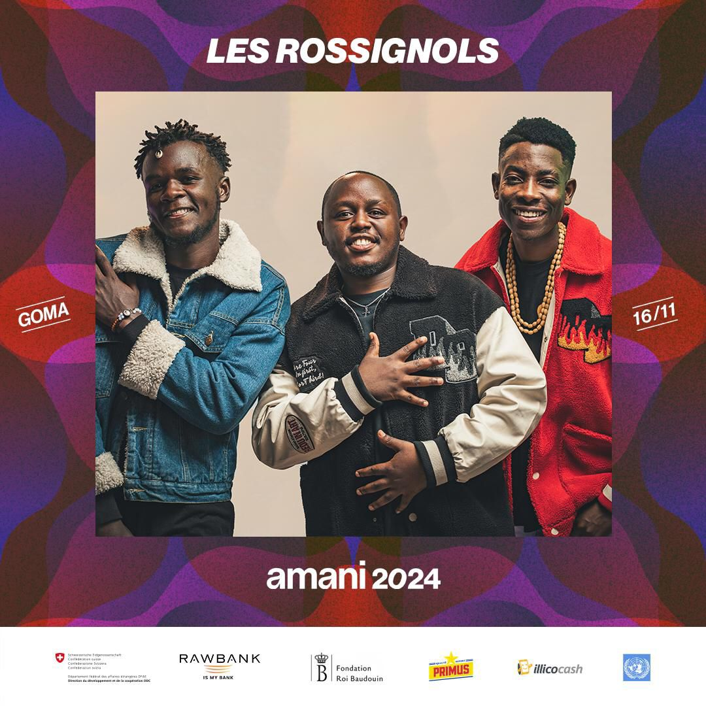
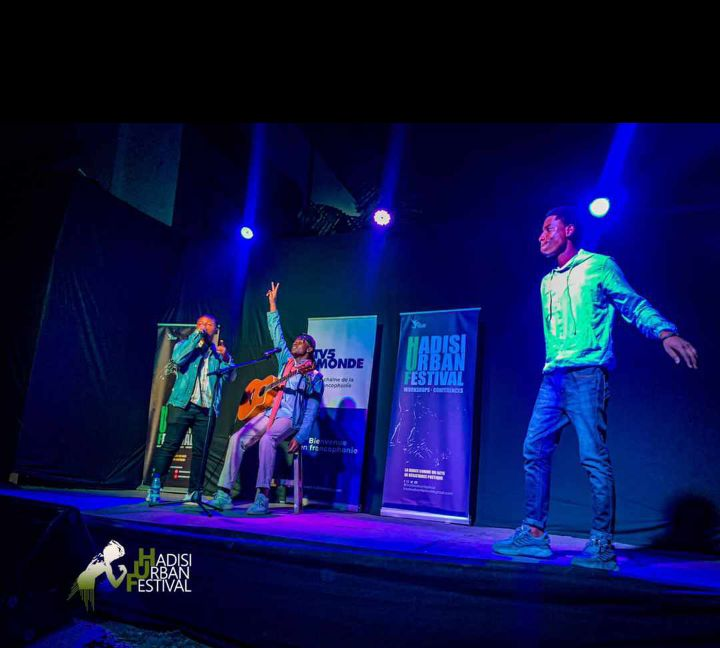
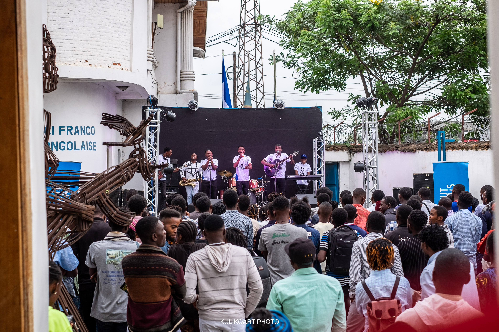

🌟 Réalisations Majeures

Festival AMANI 2024
Nous avons montés sur la grande scène du Festival Amani devant plus de 20000 festivaliers, Festival AMANI est le plus grand festival de paix d'Afrique de l'Est. Où on a pu chanter la paix et danser pour changer.

Hadisi Urban Festival
Une performance mémorable au Hadisi Urban Festival, un moment de communion intense avec le public.

Concert Masauti
Concert Masauti est notre propre concert qu'on avait organisé à l'Institut Français de Goma le jour de la fête de la musique.

Semaine des Arts
Semaine des Arts,un concert organisé par Foyer culturelle de Goma où nous avons performés sur sa grande scène.

HADISI
"HADISI" est un album spirituel, engagé et profondément humain. Chaque chanson est une histoire, une prière, une force transmise au travers de notre art vocal.